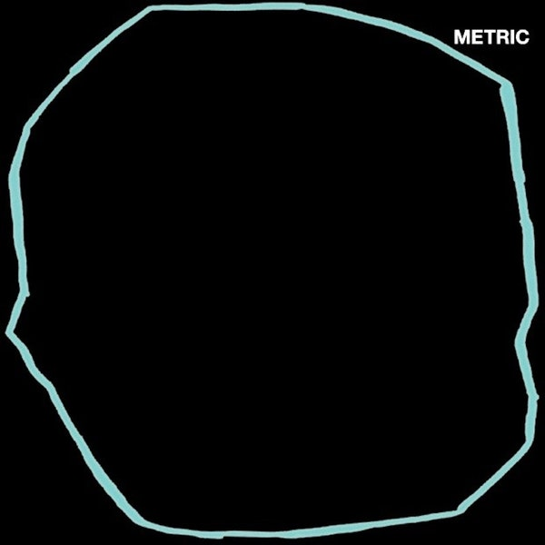
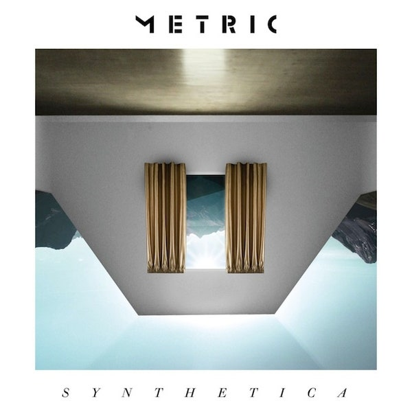
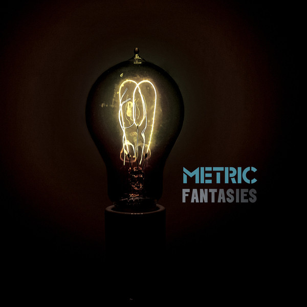

https://theculturetrip.com/north-america/canada/articles/an-introduction-to-metric-in-10-songs/
https://theculturetrip.com/north-america/canada/articles/an-introduction-to-metric-in-10-songs/
Discography

https://pitchfork.com/reviews/albums/metric-art-of-doubt/
- 1. Dark Saturday - 3:50
- 2. Love You Back - 4:07
- 3. Die Happy - 4:05
- 4. Now or Never Now - 6:19
- 5. Art of Doubt - 4:50
- 6. Underline the Black - 4:35
- 7. Dressed to Suppress - 5:42
- 8. Risk - 5:24
- 9. Seven Rules - 5:08
- 10. Holding Out - 3:57
- 11. Anticipate - 3:45
- 12. No Light on the Horion - 6:34

https://pitchfork.com/reviews/albums/16712-synthetica/
- 1. Artificial Nocturne - 5:42
- 2. Youth Without Youth - 4:17
- 3. Speed the Collapse - 3:42
- 4. Breathing Underwater - 3:56
- 5. Dreams so Real - 2:40
- 6. Lost Kitten - 3:16
- 7. The void - 3:17
- 8. Synthetica - 3:54
- 9. Clone - 5:13
- 10. The Wanderlust - 3:10
- 11. Nothing but Time - 4:04

https://www.discogs.com/Metric-Fantasies/release/3258598
- 1. Help I'm Alive - 4:45
- 2. Sick Muse - 4:17
- 3. Satellite Mind - 3:42
- 4. Twilight Galaxy - 4:53
- 5. Gold Guns Girls 4:05
- 6. Gimme Sympathy - 3:54
- 7. Collect Call - 4:46
- 8. Front Row - 3:34
- 9. Blindness - 4:26
- 10. Stadium Love - 4:13
- 10. Stadium Love - 4:13